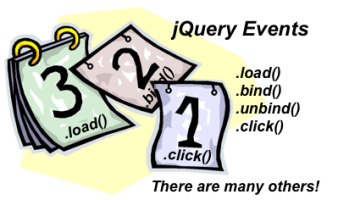
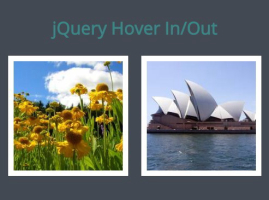

-
JavaScript Part Two
-
JavaScript-Part-Two-1
-
JavaScript-Part-Two-2
-
Lecture

This lecture discusses event handling in jQuery, and a variety of effects that can be linked to events.
Events

This lab will introduce you to event handling in jQuery.
Images

This lab uses jQuery event handling to change the appearance of images when the user interacts with them.
jQuery Plugins
jQuery plugins build on the capabilities of the jQuery library. In this lab we will review some examples.
Example

This lab will now use jQuery code (combined with JavaScript code) to play the simple Lotto game.
Exercises

In these exercises we will use jQuery to create effects with images, and also make use of jQuery plugins.